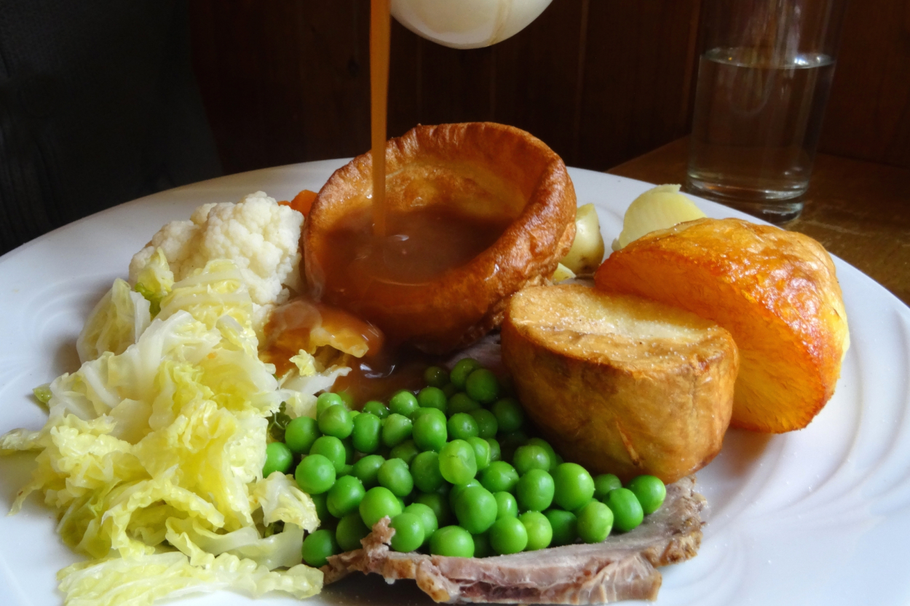
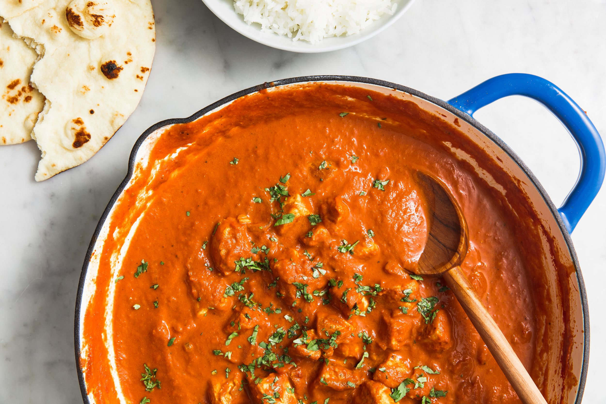

The United Kingdom has a rich and diverse food culture shaped by centuries of tradition,
regional identity, and global influences. From comforting classics to modern fusion cuisine,
the UK’s food scene offers something for every taste.

British cooking is known for its hearty, comforting dishes. Visitors often start with iconic meals like fish and chips, served hot and crispy by the seaside, or a full English breakfast packed with eggs, sausages, bacon, and toast. Sunday roasts remain a cherished weekly tradition, bringing families together around plates of roast meats, potatoes, Yorkshire puddings, and seasonal vegetables.
Each part of the UK brings its own flavour to the table: Scotland is famous for haggis, smoked salmon, and buttery shortbread. Wales offers dishes like Welsh rarebit and cawl, a warming lamb and vegetable stew. Northern Ireland delights with soda bread and the Ulster fry. England brings everything from Cornish pasties to Lancashire hotpot.
Modern UK cuisine reflects the country's dynamic multicultural identity. Cities like London, Birmingham, and Manchester are home to world-class restaurants showcasing flavours from South Asia, the Caribbean, East Asia, Europe, and beyond. Dishes such as chicken tikka masala have even become national favourites.
Whether you're seeking traditional comfort, regional authenticity, or cutting-edge innovation, the UK's food culture offers endless possibilities. It's a place where heritage meets creativity—and where every meal has a story to tell.
